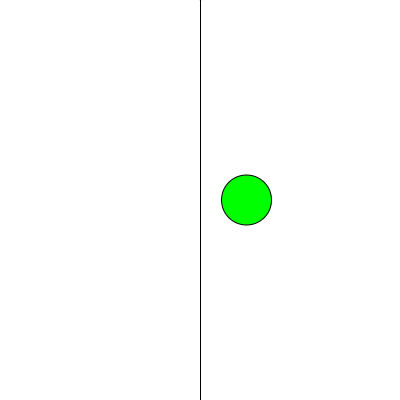

Write a code sketch that draws a circle to the screen at a random horizontal position, half-way down the canvas.
Check the reference for how to use the random() function.
Draw a vertical line at the horizontal mid-point of the canvas, from top to bottom.
If the circle is drawn to the right hand side of the line fill it with green,
otherwise fill it with red.
